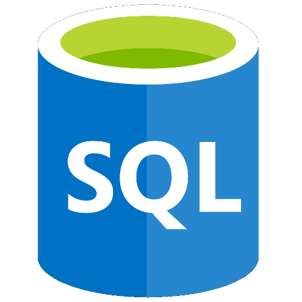
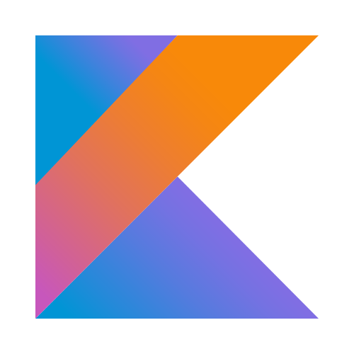

Gianmarco Randazzo
-
Mekeyboard_arrow_downBorn in 1997, I began gaining interest in computers by watching my father working on it. I wrote my first program when I was around 11 years old, it was a simple password manager that was able to store many passwords and print them using a master one, like Keepass or Lastpass which obviously I didn't know of. From there I learned and got proficient in many languages by myself, mostly learning by doing, so today I have many projects to show.
-
Open-mindednesskeyboard_arrow_downLife is always moving and changing. The very moment someone closes his mind to new ideas and new opinions, he stops learning and he gets stuck while everything is still moving. Keeping and open-mindedness is the key to improve everyday. Not even experts about something know everything about that matter, but even in the assumption in which they do happen to know everything, their knowledge may become outdated in any moment. Always keep learning, always keep an open mind.
-
Details do matterkeyboard_arrow_downDetails, in my opinion, are what make something really shine amongs other similar things. Often an high level of details can be achieved only by thinking out of the box and by seeing things with a different perspective. It is possible to find care and meticulousness in everything I do, thanks to thorough researches and refinements.
My Skills
Coding

-
Pythonkeyboard_arrow_downPython is the language I'm most proficient with. I love its "coding-style", well defined in the PEP8 document, giving a very high readability and maintainability grade to code.
"There should be one, and preferably only one, obvious way to do it." — PEP20, The Zen of Python

-
Javascriptkeyboard_arrow_downWhen I began using Javascript in my main project, I was a little concerned by its inconsistency between browsers. Luckily jQuery and ECMAScript 6 have filled many gaps and improved considerably the language, allowing me to learn it smoothly. Now it's one of my favorites.

-
C/C++keyboard_arrow_downI studied C in the last three years of high school, but it wasn't much in depth so I had to learn by myself later on when I decided to work on some projects. Then I got interest in objective oriented programming so I started practicing C++. I'd say I have a good mid-level understanding of it.

-
SQLkeyboard_arrow_downAs for C, I studied database theory in the last three years of computer science high school, with the difference that I already had experience with SQL thanks to some of my Python projects, precisely SQLite and SQLAlchemy ORM. I learned other dialects and DBMS like MySQL/MariaDB and PostgreSQL; I scratched the surface of NoSQL databases like MongoDB and Redis as well, out of curiosity.

-
HTML5/CSS3keyboard_arrow_downWhen I was around 12 years old I did, along with some friends, administrate a small forum and I was the one in charge to manage the HTML and CSS parts. Back then for the most I did copy and paste code blocks from around the internet because I didn't understand much, but as time passed I began to learn and now I can fully write my own code in both languages.

-
Kotlinkeyboard_arrow_downKotlin is what I'm learning right now, I'm doing an Android and iOS app for my Arduino project, so it's the best way to learn by doing!
Git
I love versioning and I can make the most out of Git, I can work on "Git-flow" or "Github-flow", make descriptive commit messages and use tools like submodules, rebase and cherrypick. I learned much by reading the book "Learn Git in a Month of Lunches" by Rick Umali. Check out my published works in My Projects section!
Languages
-
Italiankeyboard_arrow_downBorn and raised in Sicily, Italian is my native language. I always had high grades in school, particularly in essays, distinguishing myself for my great knowledge of words. It is thanks to the fact that I have been and am even today a great book reader.
-
Englishkeyboard_arrow_downStarting from middle school to the end of high school I had 5 different English teachers and every each of them was always astonished by my knowledge of the language that was beyond what school teaches, giving me always high grades. In fact, I started learning by myself English when I was around 10, because I needed to know the stories of my favorite videogames. Since then I never stopped, now by reading a lot of english books. Currently I can write, read and listen english as it was my native language, I only lack a bit of speaking.
-
Japanesekeyboard_arrow_downAt first I read about Japanese language out of curiosity, but ended up wanting to learn it as my third language. I'm currently studying it as an hobby, but once I get some mastery I plan to do a trip to Japan to reinforce my skill and get a "on field" experience. At the moment, I know the two basic syllabaries, some Kanjis and basic phrase structures and particles. It is a bit hard coming from a romance language, but I'm going to work hard on it and do my best to learn it.